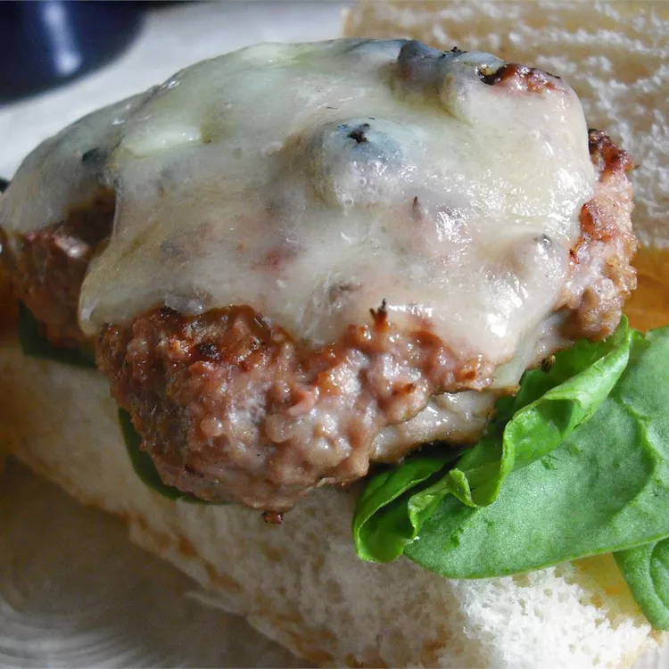

Burgers

Description
Absolutely amazing, added egg yolk to keep meat together and maybe added
a little too much onion but definitely keeping this one in the books
Ingredients
- 1 pound ground beef
- 1 small onion, finely chopped
- 3 cloves garlic, minced
- 1 tablespoon Worcestershire sauce
- 1 teaspoon salt
- ¼ teaspoon ground black pepper
- ¼ cup beer
Steps
- Preheat an outdoor grill for medium-high heat and lightly oil the grate.
- Mix the ground beef, onion, garlic, Worcestershire sauce, salt, and pepper in a bowl. Mix in the beer until absorbed by the meat mixture. Form into patties.
- Cook on the preheated grill until the burgers are cooked to your desired degree of doneness, about 5 minutes per side for well done. An instant-read thermometer inserted into the center should read 160 degrees F (70 degrees C).